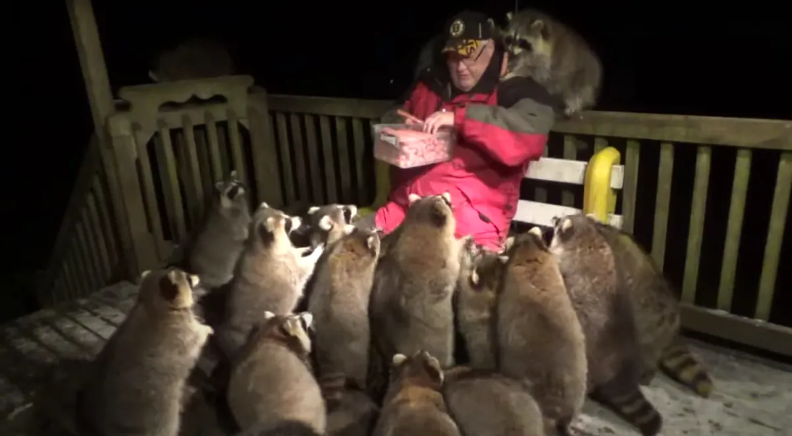

By Matthew (1/30/2023)
 image of the Raccoon Whisperer from YoutubeSo, what do I hope to accomplish by creating a blog?
I want to have a place to talk about whatever I want to as much as I want to. My plan is probably to use this as a hub and then distribute the blog posts to as many places as is reasonable. I want to use these blog posts to divulge as much information as I would like on any topic I would like to talk about.
Will this just be a place to info dump? Will I actually learn anything?
I don't know, but I hope in making blog posts that people can at least get a better look into my mind and how I think. :3